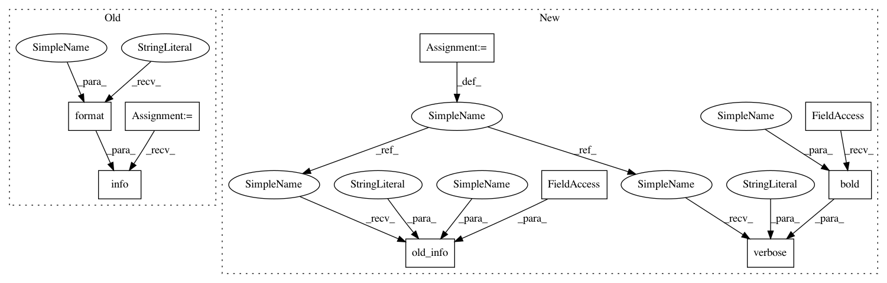

908c0c630a6c7c6e35b7bb0e172d41372bfb309d,python/ray/autoscaler/updater.py,NodeUpdater,rsync_down,#NodeUpdater#Any#Any#,172
Before Change
self.cmd_runner.run_rsync_up(source, target)
def rsync_down(self, source, target):
logger.info(self.log_prefix +
"Syncing {} from {}...".format(source, target))
self.cmd_runner.run_rsync_down(source, target)
class NodeUpdaterThread(NodeUpdater, Thread):
After Change
cf.bold(source), cf.bold(target))
def rsync_down(self, source, target):
cli_logger.old_info(logger, "{}Syncing {} from {}...", self.log_prefix,
source, target)
self.cmd_runner.run_rsync_down(source, target)
cli_logger.verbose("`rsync`ed {} (remote) to {} (local)",
cf.bold(source), cf.bold(target))
class NodeUpdaterThread(NodeUpdater, Thread):
def __init__(self, *args, **kwargs):
In pattern: SUPERPATTERN
Frequency: 3
Non-data size: 9
Instances
Project Name: ray-project/ray
Commit Name: 908c0c630a6c7c6e35b7bb0e172d41372bfb309d
Time: 2020-07-22
Author: maximsmol@gmail.com
File Name: python/ray/autoscaler/updater.py
Class Name: NodeUpdater
Method Name: rsync_down
Project Name: ray-project/ray
Commit Name: 908c0c630a6c7c6e35b7bb0e172d41372bfb309d
Time: 2020-07-22
Author: maximsmol@gmail.com
File Name: python/ray/autoscaler/updater.py
Class Name: NodeUpdater
Method Name: rsync_down
Project Name: ray-project/ray
Commit Name: 908c0c630a6c7c6e35b7bb0e172d41372bfb309d
Time: 2020-07-22
Author: maximsmol@gmail.com
File Name: python/ray/autoscaler/aws/config.py
Class Name:
Method Name: _configure_key_pair
Project Name: ray-project/ray
Commit Name: 908c0c630a6c7c6e35b7bb0e172d41372bfb309d
Time: 2020-07-22
Author: maximsmol@gmail.com
File Name: python/ray/autoscaler/updater.py
Class Name: NodeUpdater
Method Name: rsync_up